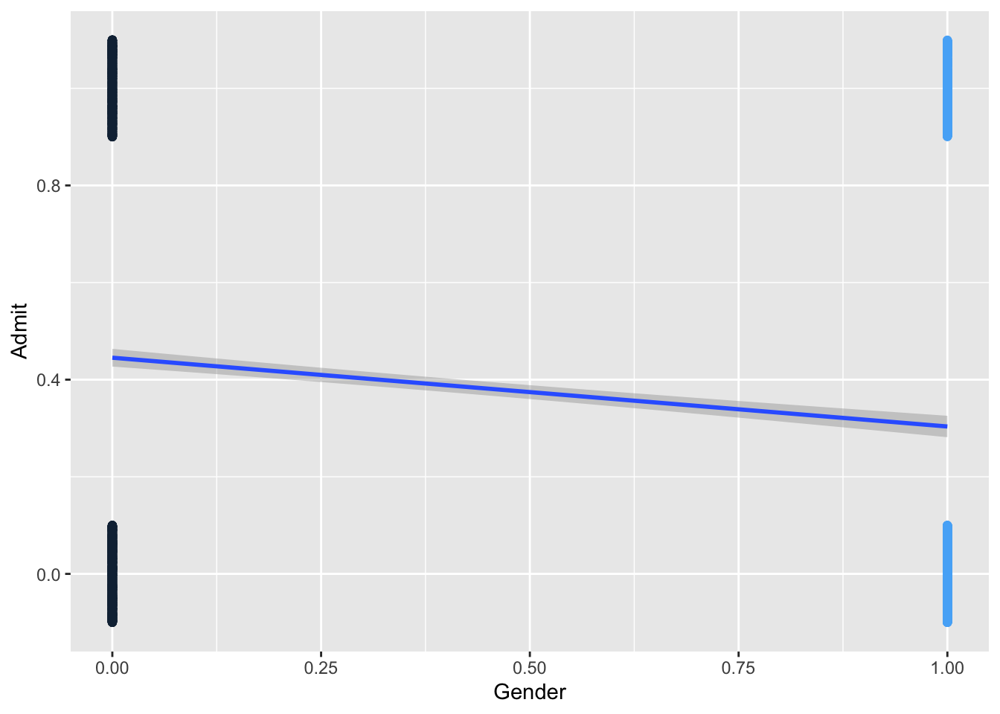
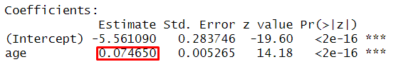
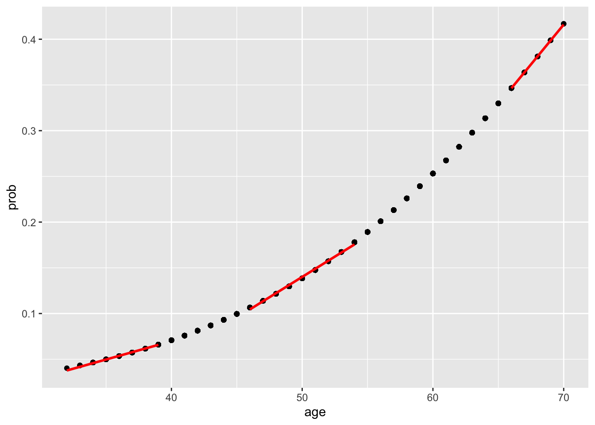
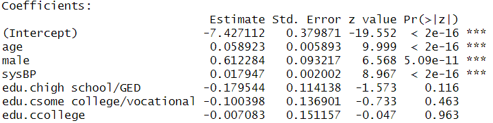

The following objects are masked from 'package:stats':
filter, lag
The following objects are masked from 'package:base':
intersect, setdiff, setequal, union
Loading required package: purrr
Loading required package: MASS
Attaching package: 'MASS'
The following object is masked from 'package:dplyr':
select
Attaching package: 'QuantPsyc'
The following object is masked from 'package:base':
norm
Attaching package: 'psych'
The following object is masked from 'package:boot':
logit
The following objects are masked from 'package:ggplot2':
%+%, alpha
Loading required package: carData
Attaching package: 'car'
The following object is masked from 'package:psych':
logit
The following object is masked from 'package:purrr':
some
The following object is masked from 'package:dplyr':
recode
The following object is masked from 'package:boot':
logit
Attaching package: 'reshape'
The following object is masked from 'package:dplyr':
rename
── Attaching core tidyverse packages ──────────────────────── tidyverse 2.0.0 ──
✔ forcats 1.0.1 ✔ stringr 1.6.0
✔ lubridate 1.9.5 ✔ tibble 3.3.1
✔ readr 2.2.0 ✔ tidyr 1.3.2
── Conflicts ────────────────────────────────────────── tidyverse_conflicts() ──
✖ psych::%+%() masks ggplot2::%+%()
✖ psych::alpha() masks ggplot2::alpha()
✖ tidyr::expand() masks reshape::expand()
✖ dplyr::filter() masks stats::filter()
✖ dplyr::lag() masks stats::lag()
✖ car::recode() masks dplyr::recode()
✖ reshape::rename() masks dplyr::rename()
✖ MASS::select() masks dplyr::select()
✖ car::some() masks purrr::some()
✖ lubridate::stamp() masks reshape::stamp()
ℹ Use the conflicted package (<http://conflicted.r-lib.org/>) to force all conflicts to become errors
Attaching package: 'kableExtra'
The following object is masked from 'package:dplyr':
group_rows
Attaching package: 'reshape2'
The following object is masked from 'package:tidyr':
smiths
The following objects are masked from 'package:reshape':
colsplit, melt, recast
Binary logistic regression is a form of regression which is used when the DV is a dichotomy and the IVs are of any type. It belongs to generalized linear models.
For a binary DV, we have two possible outcomes. Let’s take a look at the UCBAdmissions dataset built into R.
# View(UCBAdmissions)class(UCBAdmissions) # the dataset is a table
[1] "table"
dat <-as.data.frame(UCBAdmissions) # convert the table to a data frameclass(dat)
[1] "data.frame"
dat <- reshape::untable(df = dat[, !names(dat) %in%c("Freq")], num=dat$Freq)# View(dat)
Let’s answer the question: Is there a relationship between gender and admission? Alternatively, do males have a higher chance of being admitted than females? For now, let’s also recode the variables Admit and Gender to be numeric variables with “0”s and “1”s. For the Admit variable, Admitted = 1, Rejected = 0. For the Gender varable, 1 = Female, 0 = Male.
Admitted Rejected Sum
Male 1198 1493 2691
Female 557 1278 1835
Sum 1755 2771 4526
Admitted Rejected
Male 0.2646929 0.3298719
Female 0.1230667 0.2823685
Admitted Rejected
Male 0.4451877 0.5548123
Female 0.3035422 0.6964578
Admitted Rejected
Male 0.6826211 0.5387947
Female 0.3173789 0.4612053
dat$Admit <-ifelse(dat$Admit=="Admitted", 1, 0)dat$Gender <-ifelse(dat$Gender=="Female", 1, 0)contingency_table2 <-table(dat$Gender, dat$Admit) # contingency table. row is Gender; column is Admitaddmargins(contingency_table2)ggplot(dat, aes(x=Gender, y=Admit, color = Gender)) +geom_jitter(width=0, height=0.1) +geom_smooth(method ="lm") +theme(legend.position ="none")
Warning: The following aesthetics were dropped during statistical transformation:
colour.
ℹ This can happen when ggplot fails to infer the correct grouping structure in
the data.
ℹ Did you forget to specify a `group` aesthetic or to convert a numerical
variable into a factor?

0 1 Sum
0 1493 1198 2691
1 1278 557 1835
Sum 2771 1755 4526
6.1 Some Definitions
Probability of an Event
Event = Being admitted to college
Probability of the event P(Admitted) = 0.6
Odds of an Event
Odds is the relative chance of an event
Odds of being admitted = \(\frac{{P(Admitted)}}{{1 - P(Admitted)}} = \frac{{.6}}{{.4}} = 1.5\)
If you know the probability of an event, you can get the odds and vice versa.
Logit = Log-Ods of an Event
Logit is the logarithm of the odds. Logit = log(odds)
Odds of being admitted = \(\frac{{P(Admitted)}}{{1 - P(Admitted)}} = \frac{{.6}}{{.4}} = 1.5\)
Logit of being admitted = \({\log _e}(Odds(Admitted)) = {\log _e}(1.5) = .405\)
If you know the one of the three: probability, odds, and logit, you can get the values for the other two.
This is called Odds Ratio. Odds Ratio is the ratio of odds of a comparison/treatment group to that of the reference/control group.
Note: For the UCBAdmissions data, if you conduct a binary logistic regression model for each department separately, you may reach different conclusions regarding gender differences in college admissions. Google .blue[Simpson’s paradox] to learn more.
6.6 Similarities and Differences Between Binary Logistic Regression and OLS Regression
Similarities
IVs can be continuous, categorical, or a combination of continuous and categorical variables.
Many of the essential concepts in OLS regression still apply to logistic regression.
Model comparison and selection
Assumptions (Independence of Errors, Linearity, Multicollinearity; but NOT Normality)
Diagnostics (Leverage, Discrepancy, Influence)
Differences
DV is categorical in logistic regression
The DV in logistic regression follows a Binomial distribution for which you can specify a link function (logit and probit are two commonly used link functions)
The estimation method for logistic regression is maximum likelihood, rather than OLS.
dat <-import("data/framingham.csv")model <-glm(TenYearCHD ~ age, family = binomial, data = dat)summary(model)
Call:
glm(formula = TenYearCHD ~ age, family = binomial, data = dat)
Coefficients:
Estimate Std. Error z value Pr(>|z|)
(Intercept) -5.561090 0.283746 -19.60 <2e-16 ***
age 0.074650 0.005265 14.18 <2e-16 ***
---
Signif. codes: 0 '***' 0.001 '**' 0.01 '*' 0.05 '.' 0.1 ' ' 1
(Dispersion parameter for binomial family taken to be 1)
Null deviance: 3612.2 on 4239 degrees of freedom
Residual deviance: 3396.6 on 4238 degrees of freedom
AIC: 3400.6
Number of Fisher Scoring iterations: 5
Regression Coefficient

Odds Ratios and Confidence Intervals
exp(model$coefficients)
(Intercept) age
0.003844584 1.077507075
exp(confint(model))
2.5 % 97.5 %
(Intercept) 0.002190705 0.006664767
age 1.066517962 1.088765650
One year increase in age is related to 0.075 increase in the logit of having CHD
Given logit = 0.075, we obtain exp(0.055) = 1.08
One year increase in age changes the odds of CHD from 1 to 1.08
To Obtain Probabilities
dat$prob <-fitted(model) #<<df_low_prob <- dat[dat$age <40, ]df_mid_prob <- dat[dat$age >45& dat$age <55, ]df_high_prob <- dat[dat$age >65,]ggplot(dat, aes(x=age, y=prob)) +geom_point() +geom_smooth(data = df_low_prob, method ="lm", se =FALSE, color ="red") +geom_smooth(data = df_mid_prob, method ="lm", se =FALSE, color ="red") +geom_smooth(data = df_high_prob, method ="lm", se =FALSE, color ="red")

The relationship between age and CHD is positive but not linear.
6.7.1 Assess the model - model chi-square
How much better does the model predict the outcome variable, compared to a baseline model?
log-likelihood of the model. Analogous to the residual sum of squares in OLS regression
deviance = -2 X log-likelihood. It has a chi-square distribution.
model chi-square statistic. Difference between the deviance of the baseline model and the deviance of the current model.
No Studentized residuals with Bonferroni p < 0.05
Largest |rstudent|:
rstudent unadjusted p-value Bonferroni p
782 4.368554 1.2507e-05 0.05303
dat$cooks.d[dat$cooks.d >1]
numeric(0)
6.7.4 Assumptions - Linearity
dat$log.age.Int <-log(dat$age)*dat$age #<<model.linearity <-glm(TenYearCHD ~ age + dat$log.age.Int, data = dat, family =binomial()) #<<summary(model.linearity)
Call:
glm(formula = TenYearCHD ~ age + dat$log.age.Int, family = binomial(),
data = dat)
Coefficients:
Estimate Std. Error z value Pr(>|z|)
(Intercept) -13.45767 3.46917 -3.879 0.000105 ***
age 0.83681 0.33290 2.514 0.011947 *
dat$log.age.Int -0.15396 0.06721 -2.291 0.021975 *
---
Signif. codes: 0 '***' 0.001 '**' 0.01 '*' 0.05 '.' 0.1 ' ' 1
(Dispersion parameter for binomial family taken to be 1)
Null deviance: 3612.2 on 4239 degrees of freedom
Residual deviance: 3391.2 on 4237 degrees of freedom
AIC: 3397.2
Number of Fisher Scoring iterations: 5
6.7.5 Assumptions - Independence of errors
dwt(model)
lag Autocorrelation D-W Statistic p-value
1 0.02687873 1.946162 0.082
Alternative hypothesis: rho != 0
6.7.6 Use more predictors
dat$edu.c <-factor(dat$education)levels(dat$edu.c) <-c("some high school", "high school/GED", "some college/vocational", "college")model2 <-glm(TenYearCHD ~ age + male + sysBP + edu.c, family = binomial, data = dat)summary(model2)
Call:
glm(formula = TenYearCHD ~ age + male + sysBP + edu.c, family = binomial,
data = dat)
Coefficients:
Estimate Std. Error z value Pr(>|z|)
(Intercept) -7.427112 0.379871 -19.552 < 2e-16 ***
age 0.058923 0.005893 9.999 < 2e-16 ***
male 0.612284 0.093217 6.568 5.09e-11 ***
sysBP 0.017947 0.002002 8.967 < 2e-16 ***
edu.chigh school/GED -0.179544 0.114138 -1.573 0.116
edu.csome college/vocational -0.100398 0.136901 -0.733 0.463
edu.ccollege -0.007083 0.151157 -0.047 0.963
---
Signif. codes: 0 '***' 0.001 '**' 0.01 '*' 0.05 '.' 0.1 ' ' 1
(Dispersion parameter for binomial family taken to be 1)
Null deviance: 3522.6 on 4134 degrees of freedom
Residual deviance: 3186.8 on 4128 degrees of freedom
(105 observations deleted due to missingness)
AIC: 3200.8
Number of Fisher Scoring iterations: 5
6.7.7 Check Multicollinearity Among IVs
vif(model2)
GVIF Df GVIF^(1/(2*Df))
age 1.167782 1 1.080640
male 1.054028 1 1.026659
sysBP 1.144721 1 1.069916
edu.c 1.077856 3 1.012574
6.7.8 Interprete results
Regression Coefficients

Odds Ratios and Confidence Intervals
exp(model2$coefficients)
(Intercept) age
0.0005949034 1.0606932534
male sysBP
1.8446390825 1.0181093723
edu.chigh school/GED edu.csome college/vocational
0.8356510686 0.9044777525
edu.ccollege
0.9929417559
A male is more likely to have CHD than a female adjusting for the effects of other variables.
The odds of having CHD for a male is predicted to be 1.85 ( \({e^{0.612}}\)) times the odds of of having CHD for a female, holding the other variables constant.
Coefficient for “age”.
The older the person grew, the more likely the person would have CHD.
The odds of having CHD is predicted to increase by a factor of 1.06 ( \({e^{0.0589}}\)) with one year increase in age, holding the other variables constant.
Coefficients for the coded dummy variables for education.
None of them was statistically significant. Education level was not statistically significantly associated with the odds of having CHD, holding the other variables constant.
If they were statistically significant, a person who finished high school is less likely to have CHD than a person who only had some high school eduation, holding the other variables constant. The odds of having CHD for a person who finished high school is predicted to decrease by a factor of 0.835( \({e^{-.180}}\)) than a person who only had some high school education, holding the other variables constant.
The coefficients for the dummy variables compare one group’s odds of having CHD with the odds of the reference group (i.e., those with some high school education).